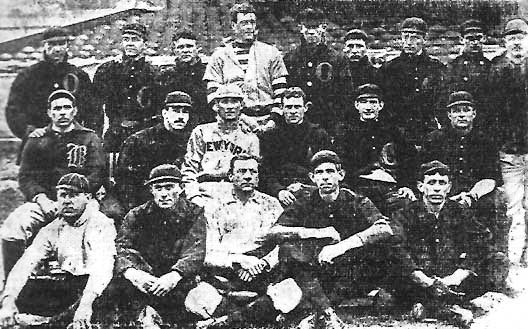

1903-1919The Early Years
1901: A Prehistory
In 1901, their first season, the Orioles had a 68–65 win–loss record and finished in fifth place in the AL. During the season, there were numerous disputes between Johnson and McGraw over disciplinary issues, which continued into the following year. Rumors began to spread that Johnson was interested in relocating the team to New York City, in an attempt to compete directly with the NL. McGraw left the Orioles and joined the New York Giants as their manager; he transferred his interest in the Baltimore team to the Giants as part of the deal. Several Orioles — including Roger Bresnahan and Joe McGinnity — joined the Giants after McGraw's departure, and the Giants gained a majority of the Orioles' stock. The league managed to take back control of the team from the Giants; after the Orioles forfeited a game because they lacked enough active players, Johnson ordered that the team be "restocked with players essentially given away by the other teams in order to play out the schedule", according to author Marty Appel. The Orioles finished last in the league both in the standings and in attendance.
The AL and NL signed an agreement after the 1902 season that ended the leagues' battles for players, which had led to increasing salaries. Johnson sought the right to locate an AL team in New York City, which was granted as part of the leagues' peace agreement. His intention was for the team to play in Manhattan, but the idea was opposed by Giants owner John T. Brush and former owner Andrew Freedman, who were connected to the city's Tammany Hall political organization. They blocked several potential stadium locations, before a pair of Tammany Hall politicians, Frank J. Farrell and William Stephen Devery, purchased the New York franchise in the AL. The pair paid US$18,000 for the team. It is not clear whether Farrell and Devery purchased the remains of the Orioles and moved them to New York, or if they received an expansion franchise. It was the last change in the lineup of MLB teams for half a century.

1903: A move to New York
The ballpark for the New York team was constructed between 165th and 168th Streets, on Broadway in Manhattan. Formally known as American League Park, it was nicknamed Hilltop Park because of its relatively high elevation. The team did not have an official nickname; it was often called the New York Americans in reference to the AL. Another common nickname for the club was the Highlanders, a play on the last name of the team's president, Joe Gordon, and the British military unit, the Gordon Highlanders. The team acquired players such as outfielder Willie Keeler and pitcher Jack Chesbro. The player-manager was Clark Griffith, obtained from the Chicago White Sox. On April 22, 1903, the Highlanders began their season with a 3–1 loss to the Washington Senators; eight days later, they won their first game in Hilltop Park, defeating the Senators 6–2. New York fell out of contention for the AL pennant in May, falling to seventh place after playing games away from Hilltop Park for a 24-day period while construction on the stadium concluded. With a final record of 72–62 after wins in 19 of 29 games played in September, New York finished in fourth.
Chesbro won 41 games in New York's 1904 season, still an AL record. New York contended for the AL pennant with the Boston Americans (later nicknamed the Red Sox); Johnson aided New York by helping the team acquire multiple players in trades, including Boston's Patsy Dougherty. Boston and New York faced each other in a season-ending five-game series that decided the pennant winner, and was played from October 7–10. Boston won two of the first three games, which meant that New York needed to win the two contests scheduled on October 10 to win the AL title. With the score of the first game tied 2–2 in the ninth inning, Chesbro threw a wild pitch that allowed a runner on third base to score, giving Boston a 3–2 victory that clinched the AL pennant; New York won the now-meaningless second game.
New York's performance declined in 1905, as numerous pitchers dealt with arm injuries and conditioning issues. After losing 18 of 25 games in May, the Highlanders ended the season in sixth. In its 1906 season, New York again contended for the AL championship. With 13 games left, the team held a one-game lead over the White Sox, but finished in second place three games behind Chicago. According to Appel, "What would follow would be a string of mediocre to bad seasons and not a very good attraction for baseball-crazed New York fans." New York recorded a fifth-place finish in 1907, with 70 wins, 22 fewer than the league champion Detroit Tigers. The 1908 and 1909 teams finished last and fifth, respectively, and there were multiple managerial changes in the period.
New York had a second-place finish in 1910, but did not seriously contend for the pennant. Manager George Stallings and first baseman Hal Chase, the team captain, clashed towards the end of the season; facing opposition from Ban Johnson, who wanted him to resign as manager, Stallings left the position. Chase managed New York's last 14 games. The following season, New York had a sixth-place finish. Early in the season, New York allowed the Giants to play in Hilltop Park after the Giants' stadium, the Polo Grounds, burned down; the arrangement lasted until June 28, when the rebuilt Polo Grounds opened. Chase resigned as manager before New York's 1912 season; Harry Wolverton accepted the position. That year, New York had a last-place finish with a record of 50–102, the winning percentage of .329 the lowest-ever for the club.
After their first couple of seasons in New York City, team ownership infrequently invested in new players. The ownership group of Farrell and Devery spent their money on personal pursuits such as gambling, leaving them with little to put into the team. New York's star player, Chase, consorted frequently with gamblers. Author Jim Reisler dubbed him "the most crooked player to ever play the game" because of reports that he took part in game fixing. The club also had difficulty drawing fans to Hilltop Park. Appel wrote that "maybe the best thing you could say about the ballpark was that it never burned down." By the end of the 1912 season, Farrell was searching for a site to build a new stadium on.
1913: New Owner, New Name
New York started playing home games at the Polo Grounds in 1913 as tenants of the Giants. Before the 1913 season, the team gained an official nickname for the first time. Either "Yankees" or "Yanks" had been used frequently since 1904 in newspapers such as the New York Evening Journal, since "Highlanders" was hard to fit in headlines. Such unofficial nicknames were common during that era, but thereafter the official name took hold — the New York Yankees.
A third major league, the Federal League (FL), began play in 1914 and lasted for two years. While the Yankees did not have to contend with direct competition for fans, as the FL chose to place its New York City franchise in Brooklyn instead of Manhattan, the team nearly lost leading pitcher Ray Caldwell to the rival league after the 1914 season. With the Yankees finishing seventh in 1913 and sixth in 1914, Farrell and Devery sold the team to brewery magnate Jacob Ruppert and former United States Army engineer Tillinghast L'Hommedieu Huston. The Yankees had rarely been profitable over the previous 10 years, and carried debts of $20,000. The sale was completed on January 11, 1915, as the pair paid a combined $460,000. Ruppert called the team "an orphan ball club, without a home of its own, without players of outstanding ability, without prestige." The new owners intended to spend freely to improve the club's talent level and made a major purchase in 1915, buying pitcher Bob Shawkey from the Philadelphia Athletics. In spite of this, the Yankees' 69 wins were only enough for fifth in the league. After wearing different designs during the Highlanders years, in 1915 the Yankees introduced white uniforms with pinstripes and an interlocking "NY" logo during games at the Polo Grounds; this remains their home uniform design today. For road games, the team began to wear gray uniforms with "New York" across the chest from 1913; the Yankees still wear similar garb.
Following the acquisition of third baseman Frank "Home Run" Baker from the Athletics, the 1916 Yankees had 80 wins and contended for the AL pennant for most of the season, before suffering a run of injuries to key players, including Baker. In the Yankees' 1917 season, New York finished in sixth; Bill Donovan, the club's manager since 1915, was fired in the offseason. Ruppert replaced him with Miller Huggins, completing the hire while Huston was overseas fighting in World War I. The Yankees contended for first place in the war-shortened 1918 campaign along with the Red Sox and Cleveland Indians, but lost numerous players to military service and were fourth at 60–63. After the season, the Yankees acquired three players — including outfielder Duffy Lewis and pitcher Ernie Shore — in a trade with the Red Sox, the winners of the 1918 World Series. In 1919, the club made another trade with Boston, acquiring pitcher Carl Mays for two players and $40,000. The midseason deal provoked a dispute between the teams and Ban Johnson, who unsuccessfully attempted to block it. Mays had a 9–3 pitching record as a Yankee, and the team improved to 80–59 for the season; the mark was good for third in the AL. The 1919 season was the first in which the Yankees played games at the Polo Grounds on Sundays; until then, blue laws had banned Sunday baseball in New York state. The Yankees' attendance more than doubled in 1919, rising to about 619,000. The Giants soon moved to force the Yankees out of the Polo Grounds, in an effort to secure more Sunday home games.